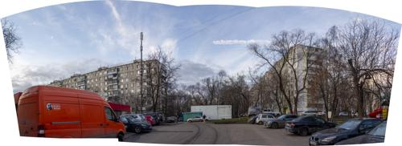

2020-03-18
Фото №1" title="2020-03-18 -> Фото №1 (Кликни, чтобы глянуть фулл)">
Камера
Canon EOS 550D
Объектив
EF-S18-135mm f/3.5-5.6 IS
Дата и время
2020-03-18 17:25:23
Выдержка
1/250 сек
Диафрагма
f/8
ISO
100
Фокусное расстояние
18 mm
 Фото №2" title="2020-03-18 -> Фото №2 (Кликни, чтобы глянуть фулл)">
Камера
Canon EOS 550D
Объектив
EF-S18-135mm f/3.5-5.6 IS
Дата и время
2020-03-18 18:07:44
Выдержка
1/125 сек
Диафрагма
f/8
ISO
100
Фокусное расстояние
18 mm